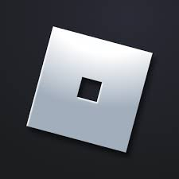

alert("This website is in development. Any url may bring you to another website.");
WELCOME
What Is Roblox?

logo from unknown source
Roblox is a fun game platform for age of 7 and above. It contains many games created by game creaters world wide for people to enjoy.
You can play games that are intense or calming or educational. If you want to create a game in roblox, you can do it by using roblox game studio.
Roblox is free for everyone to play. Their in game currency is Robux. Robux is used to buy advatar, in games items and many more!!!
To URL